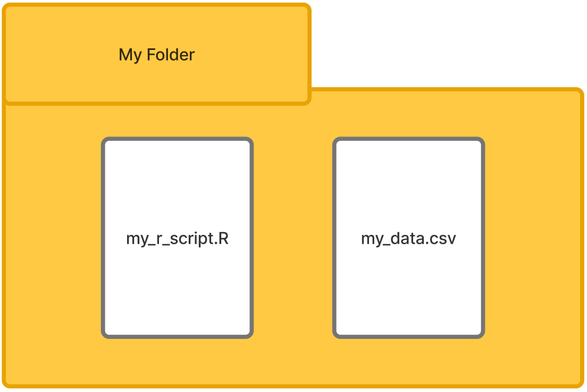

mean(c(10, 50, 100))[1] 53.33333Throughout this book you will see two threads of work. Where possible we will rely on the tidyverse, a collection of packages first developed by Hadley Wickham and now maintained by Posit. These packages offer an improved way of working with R overall. When it is needed or is more efficient, we will switch to base R which refers to the default capabilities that the language includes, or other packages outside of the tidyverse.
For this chapter, create a new script file (File > New > File R Script) and save it to a folder where you will also save data files. An example script file is show here for how you might structure one in your work.

Typically, there is some information about what the script is all about up top. The packages for the script are located before the work happens so they are pre-loaded. Data are imported, inspected, and prepared before the analysis occurs. To help the flat script file appear more visually structured, each section can be divided with continuous underscore characters creating lines, for example.
#________________________________________________________
# Title: Generic Example Script File
# Analyst: Your name
# Date: The date
# Purpose: The purpose of the wok in the script.
#________________________________________________________
#________________________________________________________
# Step 1. Install/ Load packages
install.packages ("package_name") # Only once
library(package_name) # Each session
#________________________________________________________
# Step 2. Set working directory(optionally use RStudio GUI instead)
setwd("C:/users/name/documents/folder")
#________________________________________________________
# Step 3. Import data
data_frame <- read_csv("your_data.csv")
#________________________________________________________
# Step 4. Inspection of loaded data
glimpse(data_frame) # Shows columns types and sample values.
#________________________________________________________
# Step 5. Data preparation
# Many actions could be taken here such as dropping missing values.
data_frame <- drop_na(data_frame)
#________________________________________________________
# Step 6. Analyze the data
# The analysis will proceed after these initial steps.For the work in this chapter, first install and then load the following packages:
# Install
install.packages("tidyverse") # Only once
# Load
library(tidyverse) # Each sessionMost work in R is the result of executing pre-defined functions. These operators take some data as input, work with it in some way, and then output the result. These functions take arguments that tell them what to work on or adjust their behavior.
Here is a generic function syntax:
function_name(data, argument_1)Here is the mean() function in action:
mean(c(10, 50, 100))[1] 53.33333Everything created in R is stored in memory as an object. Objects can be thought of as containers which we give a name to identify them by and access them again later. You can see a list of the objects that R currently has in memory in the environment pane of RStudio or by running the command ls() in your console.
Data are brought into your environment to be worked with and that is what this chapter is about. Data are imported into R as objects. The default object is called a data frame. Data frames are base R’s way of bringing in tabular data made of rows and columns. The tidyverse has improved on the data frame,importing tabular data as tibbles. A tibble has some subtle smart features that make them easier to work with and they are also compatible across the range of tidyverse packages.
Each column that you import into R has a data type so it knows the kind of values that are represented by the variable. The data type determines the types of actions that can be taken when working with data. Multiplying red (character) by cat (character) is beyond the capabilities of the language, for example. The table here shows the different types that are commonly worked with.
| Type | Name | What it holds | Example |
|---|---|---|---|
chr |
Character | Text | Business Major, Student IDs |
dbl |
Double | Numbers, with or without decimals | 1, 1.3 |
int |
Integer | Whole numbers only | 10, 100000 |
lgl |
Logical | Boolean values only | TRUE, FALSE |
fct |
Factor | Categorical values with fixed groups | First-Generation |
ord |
Ordered Factor | Categorical variable with meaningful ranks | Freshman, Senior |
Operators are symbols used by R to work with values. Assignment operators let us assign values directly to named objects. Arithmetic operators are used for working with values via common arithmetic methods, such as multiplying or adding. Comparison operators compare two or more values. They return a logical result, either TRUE or FALSE.Logical operators let us take the results from two or more logical comparisons (i.e., conditions) and returns a single logical result, either TRUE or FALSE.
# Assignment________________________________
# See these values in your environment pane.
credits <- 15
program <- "Biology"
full_time <- TRUE
# Arithmetic operators________________________________
credits + 3 # addition[1] 18credits - 3 # subtraction[1] 12credits * 2 # multiplication[1] 30credits / 2 # division[1] 7.5credits ^ 2 # exponent[1] 225credits %% 4 # modulo (remainder)[1] 3# Comparison________________________________
credits > 12 # greater than[1] TRUEcredits < 12 # less than[1] FALSEcredits >= 15 # greater than or equal to[1] TRUEcredits == 15 # equal to[1] TRUEprogram != "Business" # not equal to[1] TRUE# Logical________________________________
full_time & (credits > 12) # AND - both must be TRUE[1] TRUEfull_time | (credits < 12) # OR - either can be TRUE[1] TRUE!full_time # NOT - reverses the TRUE value[1] FALSEBeyond the tabular data frame and tibble, data in R are structured a few different ways. Here are some common ones.
credit_hours <- (10, 20, 30)
student <- list(id = "S001, credits = 12)
scores <- matrix(id = "S001, credits = 12)
# Vector________________________
credit_hours <- c(10, 20, 30)
credit_hours[1] 10 20 30# List________________________
student <- list(id = "S001", credits = 12)
student$id
[1] "S001"
$credits
[1] 12# Matrix________________________
scores <- matrix(c(88, 92, 75, 80), nrow = 2)
scores [,1] [,2]
[1,] 88 75
[2,] 92 80Commonly, datasets are in flat CSV files that we want to analyze. These files are typically an option to export from other systems such as an LMS in higher education, so it is useful to know how to work with them.
Download the small student dataset here to try importing it: student dataset
For this import we are using the tidyverse package called readr. readr imports your data as a tibble and reports on the types of columns imported.It chooses these types by inspecting the data automatically and determining what is there. Sometimes this may not be right for what you want to accomplish with the data. For this workflow, we load the data, confirm it is there, change a column type, and then re-inspect to see that the type was changed as expected.
# Load the CSV into a tibble called enrollment.
# Note that my data are in a folder called "data";
# If your script and your data are in the same folder, run this instead
# enrollment <- read_csv("7160_module1_student_enrollment.csv")
enrollment <- read_csv("data/7160_module1_student_enrollment.csv")
# Inspect the data.
glimpse(enrollment) # All columns with their type and sample valuesRows: 20
Columns: 3
$ Student_ID <chr> "S001", "S002", "S003", "S004", "S005", "S006", "S007…
$ Program <chr> "Computer Science", "Computer Science", "Biology", "C…
$ Credits_Enrolled <dbl> 15, 12, 9, 16, 12, 12, 6, 15, 12, 18, 3, 9, 12, 14, 1…head(enrollment) # See the first six rows# A tibble: 6 × 3
Student_ID Program Credits_Enrolled
<chr> <chr> <dbl>
1 S001 Computer Science 15
2 S002 Computer Science 12
3 S003 Biology 9
4 S004 Computer Science 16
5 S005 Business 12
6 S006 Biology 12# Change the Program variable from text to a categorical variable.
enrollment$Program <- as.factor(enrollment$Program)
# Confirm the changed variable type.
glimpse(enrollment)Rows: 20
Columns: 3
$ Student_ID <chr> "S001", "S002", "S003", "S004", "S005", "S006", "S007…
$ Program <fct> Computer Science, Computer Science, Biology, Computer…
$ Credits_Enrolled <dbl> 15, 12, 9, 16, 12, 12, 6, 15, 12, 18, 3, 9, 12, 14, 1…